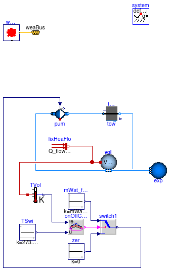
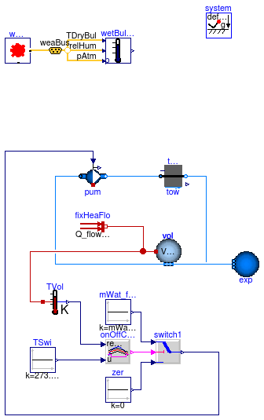

This package contains base classes that are used to construct the models in Buildings.Fluid.HeatExchangers.CoolingTowers.Examples.
Extends from Modelica.Icons.BasesPackage (Icon for packages containing base classes).
| Name | Description |
|---|---|
| PartialStaticTwoPortCoolingTower | Base class for test models of cooling towers |
| PartialStaticTwoPortCoolingTowerWetBulb | Partial test model for cooling tower with wet bulb temperature as potential for heat transfer |
 Buildings.Fluid.HeatExchangers.CoolingTowers.Examples.BaseClasses.PartialStaticTwoPortCoolingTower
Buildings.Fluid.HeatExchangers.CoolingTowers.Examples.BaseClasses.PartialStaticTwoPortCoolingTower
| Type | Name | Default | Description |
|---|---|---|---|
| CoolingTower | tow | redeclare Buildings.Fluid.He... | Cooling tower |
| Nominal condition | |||
| MassFlowRate | mWat_flow_nominal | 0.5 | Design air flow rate [kg/s] |
| Type | Name | Description |
|---|---|---|
| Bus | weaBus |
partial model PartialStaticTwoPortCoolingTower
"Base class for test models of cooling towers"
import Buildings;
package Medium_W = Buildings.Media.ConstantPropertyLiquidWater;
parameter Modelica.SIunits.MassFlowRate mWat_flow_nominal = 0.5
"Design air flow rate";
replaceable Buildings.Fluid.HeatExchangers.CoolingTowers.BaseClasses.CoolingTower
tow
constrainedby
Buildings.Fluid.HeatExchangers.CoolingTowers.BaseClasses.CoolingTower(
redeclare package Medium = Medium_W,
m_flow_nominal=mWat_flow_nominal,
dp_nominal=6000,
energyDynamics=Modelica.Fluid.Types.Dynamics.SteadyState) "Cooling tower";
Buildings.Fluid.Movers.FlowMachine_m_flow pum(redeclare package Medium =
Medium_W, m_flow_nominal=mWat_flow_nominal,
dynamicBalance=false,
filteredSpeed=false) "Pump for chilled water loop";
inner Modelica.Fluid.System system;
Buildings.BoundaryConditions.WeatherData.ReaderTMY3 weaDat(filNam=
"Resources/weatherdata/USA_CA_San.Francisco.Intl.AP.724940_TMY3.mos");
Buildings.BoundaryConditions.WeatherData.Bus weaBus;
Modelica.Blocks.Logical.OnOffController onOffController(bandwidth=4);
Modelica.Blocks.Logical.Switch switch1;
Modelica.Blocks.Sources.Constant TSwi(k=273.15 + 22)
"Switch temperature for switching tower pump on";
Modelica.Blocks.Sources.Constant zer(k=0) "Zero flow rate";
Modelica.Blocks.Sources.Constant mWat_flow(k=mWat_flow_nominal)
"Water flow rate";
Buildings.Fluid.MixingVolumes.MixingVolume vol(nPorts=3,
redeclare package Medium = Medium_W,
m_flow_nominal=mWat_flow_nominal,
prescribedHeatFlowRate=true,
V=0.5);
Buildings.Fluid.Sources.FixedBoundary exp( redeclare package
Medium = Medium_W, nPorts=1);
Modelica.Thermal.HeatTransfer.Sources.FixedHeatFlow fixHeaFlo(Q_flow=0.5*
mWat_flow_nominal*4200*5) "Fixed heat flow rate";
Modelica.Thermal.HeatTransfer.Sensors.TemperatureSensor TVol
"Water temperature";
equation
connect(weaDat.weaBus, weaBus);
connect(onOffController.y, switch1.u2);
connect(zer.y, switch1.u3);
connect(mWat_flow.y, switch1.u1);
connect(vol.ports[1], pum.port_a);
connect(fixHeaFlo.port, vol.heatPort);
connect(vol.heatPort, TVol.port);
connect(tow.port_b, vol.ports[2]);
connect(pum.port_b, tow.port_a);
connect(onOffController.u, TSwi.y);
connect(TVol.T, onOffController.reference);
connect(switch1.y, pum.m_flow_in);
connect(exp.ports[1], vol.ports[3]);
end PartialStaticTwoPortCoolingTower;
Buildings.Fluid.HeatExchangers.CoolingTowers.Examples.BaseClasses.PartialStaticTwoPortCoolingTowerWetBulb
| Type | Name | Default | Description |
|---|---|---|---|
| CoolingTower | tow | redeclare Buildings.Fluid.He... | Cooling tower |
| Nominal condition | |||
| MassFlowRate | mWat_flow_nominal | 0.5 | Design air flow rate [kg/s] |
| Type | Name | Description |
|---|---|---|
| Bus | weaBus |
model PartialStaticTwoPortCoolingTowerWetBulb
"Partial test model for cooling tower with wet bulb temperature as potential for heat transfer"
import Buildings;
extends PartialStaticTwoPortCoolingTower(exp(redeclare package Medium =
Medium_W));
package Medium_A = Buildings.Media.PerfectGases.MoistAir;
Buildings.Utilities.Psychrometrics.TWetBul_TDryBulPhi wetBulTem(
redeclare package
Medium = Medium_A) "Model for wet bulb temperature";
equation
connect(weaBus.pAtm, wetBulTem.p);
connect(weaBus.TDryBul, wetBulTem.TDryBul);
connect(weaBus.relHum, wetBulTem.phi);
end PartialStaticTwoPortCoolingTowerWetBulb;